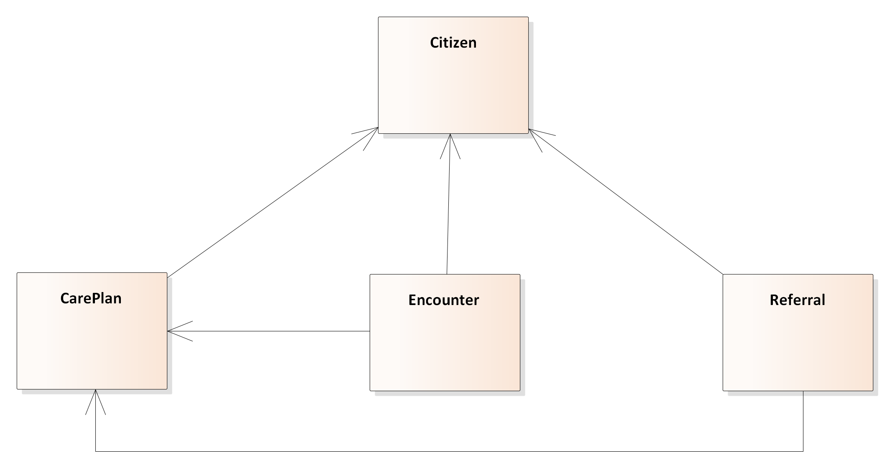
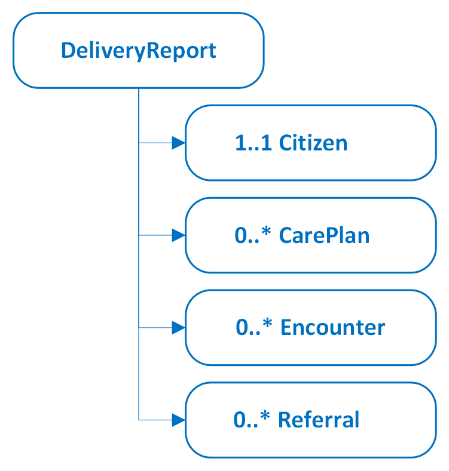

Links: Table of Contents | QA Report
This fragment is available on index.html
This publication includes IP covered under the following statements.
| Type | Reference | Content |
|---|---|---|
| web | www.kl.dk |
|
| web | kl.dk |
|
| web | kl.dk |
IG © 2025+ Kommunernes Landsforening
. Package kl.dk.fhir.ltt#1.0.1 based on FHIR 4.0.1
. Generated 2025-10-29
Links: Table of Contents | QA Report |
| web | en.wikipedia.org | Both Bundle.link and Bundle.entry.link are defined to support providing additional context when Bundles are used (e.g. HATEOAS ). |
|
ClassDiagram.png  |
|
ReportStructure.png  |
tree-filter.png 
|